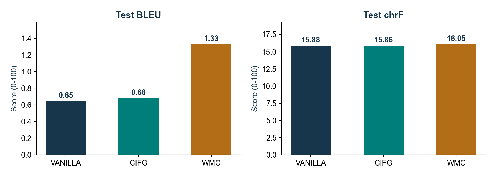
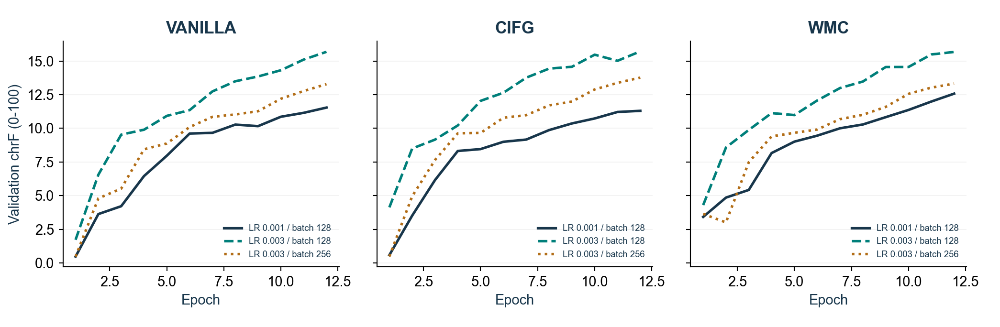

UIR / Advanced NLP / TP B / 2026-2027
model,run_id,learning_rate,batch_size,best_epoch,parameters,bleu,chrf,exact_match,bleu_signature,chrf_signature vanilla,vanilla_lr0.003_batch128,0.003,128,12,713296,0.6454919349120691,15.877386931467113,0.0015785319652722968,nrefs:1|case:mixed|eff:no|tok:13a|smooth:exp|version:2.6.0,nrefs:1|case:mixed|eff:yes|nc:6|nw:0|space:no|version:2.6.0 cifg,cifg_lr0.003_batch128,0.003,128,12,655696,0.6794162566569633,15.861263008759751,0.0023677979479084454,nrefs:1|case:mixed|eff:no|tok:13a|smooth:exp|version:2.6.0,nrefs:1|case:mixed|eff:yes|nc:6|nw:0|space:no|version:2.6.0 wmc,wmc_lr0.003_batch128,0.003,128,12,811600,1.3265783743662314,16.0485914604513,0.0007892659826361484,nrefs:1|case:mixed|eff:no|tok:13a|smooth:exp|version:2.6.0,nrefs:1|case:mixed|eff:yes|nc:6|nw:0|space:no|version:2.6.0
{
"source_disjoint": true,
"target_disjoint": true,
"groups_disjoint": true,
"runs": 9,
"epochs_per_run": 12,
"metrics_recomputed": true,
"validation_only_selection": true,
"parameter_counts_verified": true,
"generation_protocol": "reference-free greedy decoding, max 48 tokens, EOS termination"
}
